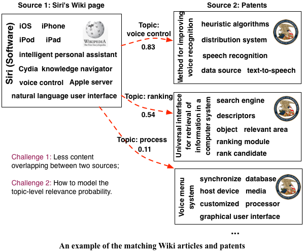

Yang Yang 杨洋
Yang Yang 杨洋
Assistant Professor, Zhejiang University
Email: yangya {at} zju [dot] edu [dot] cn
Office: Room 108, Zetong Building, Yuquan Campus

Information diffusion, which studies how information is propagated in social networks, has attracted considerable research effort recently. However, most existing approaches do not distinguish between different social roles that nodes may play in the diffusion process.
We study the interplay between users’ social roles and their influence on information diffusion. In particular, we propose a generative model that integrates social role extraction and diffusion modeling into a unified framework. We then estimate the unknown parameters of the proposed model based on historical diffusion data. The proposed model can be applied in several scenarios. For instance, at the micro-level, the proposed model can be used to predict whether a user will repost a given message; while at the macro-level, it is able to predict both the scale and the duration of a diffusion process. We evaluate the proposed model on a real social media data set. Compared with several alternative methods, our model shows better performance in both micro- and macro-level prediction tasks.
Paper: roleaware.pdf | Data:
roleaware.pdf | Data:  Details
Details

Given an entity in a source domain, finding its matched entities from another (target) domain is an important task in many applications. Traditionally, the problem was usually addressed by first extracting major keywords corresponding to the source entity and then query relevant entities from the target domain using those keywords. However, the method would inevitably fails if the two domains have less or no overlapping in the content. An extreme case is that the source domain is in English and the target domain is in Chinese.
In this paper, we formalize the problem as entity matching across heterogeneous sources and propose a probabilistic topic model to solve the problem. The model integrates the topic extraction and entity matching, two core subtasks for dealing with the problem, into a unified model. Specifically, for handling the text disjointing problem, we use a cross-sampling process in our model to extract topics with terms coming from all the sources, and leverage existing matching relations through latent topic layers instead of at text layers. Benefit from the proposed model, we can not only find the matched documents for a query entity, but also explain why these documents are related by showing the common topics they share. Our experiments in two real-world applications show that the proposed model can extensively improve the matching performance (+19.8% and +7.1% in two applications respectively) compared with several alternative methods.
Paper:crossmatch.pdf | Code: crossmatch.zip

Demographics are widely used in marketing to characterize different
types of customers. However, in practice, demographic information
such as age, gender, and location is usually unavailable due
to privacy and other reasons. In this paper, we aim to harness the
power of big data to automatically infer users' demographics based
on their daily mobile communication patterns.
Our study is based on a real-world large mobile network of more than 7,000,000 users and over 1,000,000,000 communication records (CALL and SMS). We discover several interesting social strategies that mobile users frequently use to maintain their social connections. First, young people are very active in broadening their social circles, while seniors tend to keep close but more stable connections. Second, female users put more attention on cross-generation interactions than male users, though interactions between male and female users are frequent. Third, a persistent same-gender triadic pattern over one’s lifetime is discovered for the first time, while more complex opposite-gender triadic patterns are only exhibited among young people.
Paper:WhoAmI.pdf | Code: WhoAmI.zip
Yang Yang, Zongtao Liu, Chenhao Tan, Fei Wu, Yueting Zhuang, and Yafeng Li.
To Stay or to Leave: Churn Prediction for Urban Migrants in the Initial Period.
In Proceedings of the Twenty-Seventh World Wide Web Conference
(WWW'18), 2018.
[PDF]
[Data]
Yang Yang, Chenhao Tan, Zongtao Liu, Fei Wu, and Yueting Zhuang.
Urban Dreams of Migrants: A Case Study of Migrant Integration in Shanghai.
In Proceedings of the 32nd AAAI Conference on Artificial Intelligence
(AAAI'18), 2018.
[PDF]
Lekui Zhou, Yang Yang, Xiang Ren, Fei Wu, and Yueting Zhuang.
Dynamic Network Embedding by Modeling Triadic Closure Process.
In Proceedings of the 32nd AAAI Conference on Artificial Intelligence
(AAAI'18), 2018.
[PDF]
[Code]
Rui Feng, Yang Yang, Wenjie Hu, Fei Wu, and Yueting Zhuang.
Representation Learning for Scale-free Networks.
In Proceedings of the 32nd AAAI Conference on Artificial Intelligence
(AAAI'18), 2018.
[PDF]
Yupeng, Yizhou Sun, Yanen Li, annd Yang Yang.
RaRE: Social Rank Regulated Large-scale Network Embedding
In Proceedings of the Twenty-Seventh World Wide Web Conference
(WWW'18), 2018.
[PDF]
Menghan Wang, Xiaolin Zheng, Yang Yang, and Kun Zhang.
Collaborative Filtering with Social Exposure: A Modular Approach to Social Recommendation.
In Proceedings of the 32nd AAAI Conference on Artificial Intelligence
(AAAI'18), 2018.
Jun Feng, Minlie Huang, Li Zhao, Yang Yang, and Xiaoyan Zhu.
Reinforcement Learning for Relation Extraction from Noisy Data.
In Proceedings of the 32nd AAAI Conference on Artificial Intelligence
(AAAI'18), 2018.
[PDF]
Yang Yang, Jie Tang, and Juanzi Li.
Learning to Infer Competitive Relationships in Heterogeneous Networks.
In ACM Transactions on Knowledge Discovery from Data (TKDD), 2017.
[PDF]
Xinyang Jiang, Siliang Tang, Yang Yang, Zhou Zhao, Fei Wu, and Yueting Zhuang.
Detecting Temporal Proposal for Action Localization with Tree-structured Search Policy.
In Proceedings of the 25th Conference on ACM Multimedia (ACM Multimedia'17), 2017.
Yuxiao Dong, Nitesh V. Chawla, Jie Tang, Yang Yang, and Yang Yang.
User Modeling on Demographic Attributes in Large-Scale Mobile Social Networks.
In ACM Transactions on Information Systems (TOIS), 2017, Volume 35, Issue 4.
[PDF]
Yang Yang, Jia Jia, Boya Wu, and Jie Tang.
Social Role-Aware Emotion Contagion in Image Social Networks.
In Proceedings of the 30th AAAI Conference on Artificial Intelligence
(AAAI'16), 2016, pages 65-71.
[PDF]
[Data]
Jun Feng, Minlie Huang, Yang Yang, and Xiaoyan Zhu.
GAKE: Graph Aware Knowledge Emebdding.
In Proceedings of the 27th International Conference on Computational Linguistics
(COLING'16), 2016, pages 641-651.
[PDF]
Boya Wu, Jia Jia, Yang Yang , Peijun Zhao, Jie Tang, and Qi Tian.
Inferring Emotional Tags From Social Images With User Demographics.
In IEEE Transactions on Multimedia (TMM) , 2016, accepted.
[PDF]
Yang Yang, Yizhou Sun, Jie Tang, Bo Ma, and Juanzi Li.
Entity Matching across Heterogeneous Sources.
In Proceedings of the 21st ACM SIGKDD International Conference on Knowledge Discovery and Data Mining
(KDD'15), 2015, pages 1395-1404.
[PDF]
[Data&Code]
Yang Yang, Jie Tang, Cane Wing-Ki Leung, Yizhou Sun, Qicong Chen, Juanzi Li, and Qiang Yang.
RAIN: Social Role-Aware Information Diffusion.
In Proceedings of the 29th AAAI Conference on Artificial Intelligence
(AAAI'15), 2015, page 367-373.
[PDF]
[Data&Code]
[Data]
Yang Yang and Jie Tang.
Beyond Query: Interactive User Intention Understanding.
In Proceedings of the 2015 IEEE International Conference on Data Mining
(ICDM'15), 2015, pages 519-528.
[PDF]
Boya Wu, Jia Jia, Yang Yang, Peijun Zhao, and Jie Tang.
Understanding the Emotions Behind Social Images: Inferring with User Demographics.
In Proceedings of 2015 IEEE International Conference on Multimedia and Expo
(ICME'15), 2015.
[PDF]
Yang Yang, Jia Jia, Shumei Zhang, Boya Wu, Qicong Chen, Juanzi Li, Chunxiao Xing, and Jie Tang.
How Do Your Friends on Social Media Disclose Your Emotions?
In Proceedings of the 28th AAAI Conference on Artificial Intelligence
(AAAI'14), 2014, pages 306-312.
[PDF]
[Data&Code]
Yang Yang, Walter Luyten, Lu Liu, Marie-Francine Moens, Jie Tang, and Juanzi Li.
Forecasting Potential Diabetes Complications.
In Proceedings of the 28th AAAI Conference on Artificial Intelligence
(AAAI'14), 2014, pages 313-319.
[PDF]
[Data&Code]
Yuxiao Dong, Yang Yang, Jie Tang, Yang Yang, and Nitesh V. Chawla.
Inferring User Demographics and Social Strategies in Mobile Social Networks.
In Proceedings of the Twentyth ACM SIGKDD International Conference on Knowledge Discovery and Data Mining
(KDD'14), 2014, pages 15-24.
[PDF]
[Data&Code]
Yang Yang, Jianfei Wang, Yutao Zhang, Wei Chen, Jing Zhang, Honglei Zhuang, Zhilin Yang, Bo Ma, Zhanpeng Fang, Sen Wu, Xiaoxiao Li, Debing Liu, and Jie Tang.
SAE: Social Analytic Engine for Dynamic Networks.
In Proceedings of the Ninteenth ACM SIGKDD International Conference on Knowledge Discovery and Data Mining
(KDD'13, demo paper), 2013, pages 1502-1505.
[PDF]
[Poster]
Yang Yang, Jie Tang, Jacklyne Keomany, Yanting Zhao, Ying Ding, Juanzi Li, and Liangwei Wang.
Mining Competitive Relationships by Learning across Heterogeneous Networks.
In Proceedings of the Twenty-First Conference on
Information and Knowledge Management
(CIKM'12), 2012, pages 1432-1441.
[PDF]
Jie Tang, Bo Wang, Yang Yang, Po Hu, Yanting Zhao, Xinyu Yan, Bo Gao, Minlie Huang, Peng Xu, Weichang Li, and Adam K. Usadi.
PatentMiner: Topic-driven Patent Analysis and Mining.
In Proceedings of the Eighteenth ACM SIGKDD International Conference on Knowledge Discovery and Data Mining
(KDD'12), 2012, pages 1366-1374.
[PDF]
[Slides]
[Poster]
[System]
[Video]
Tieyun Qian, Yang Yang , Shuo Wang. Refining Graph Partitioning for Social Network Clustering. In Proceeding of the Eleventh International Conference on Web Information System Engineering (WISE'10), 2010, pages 77-90.
[PDF]
Conference Organization:
BigNet Wokshop at CIKM 2016
KDD Forum at SMP 2016
Conference PC Members:
WWW 2017, WSDM 2017, CIKM 2017, ICWSM 2017, WSDM 2016, CIKM 2016, ASONAM 2015.
2016, awarded Excellent Graduate of Tsinghua University with Ph.D. degree
2016, awarded Excellent Graduate of Beijing City with Ph.D. degree
2015, awarded National Scholarship
2014, awarded National Scholarship
2013, awarded Alumnus Scholarship of Tsinghua University
2011, awarded best graduation thesis of Wuhan University
2009, ACM International Collegiate Programming Contest, Asia Regional, 2 gold medals
2009, Champion of Citi Financial IT Application Competition
2009, awarded “Ten Outstanding Young People of Wuhan University”
2009, awarded “Ten Great Students of Luo-jia Mountain”
2008, ACM International Collegiate Programming Contest, Asia Regional, 3 gold medals
When not doing research, I clear my mind by playing Magic The Gathering (a world-wide trading card game). I won a Pro Tour Qualifier Tournament in 2014.
Ph.D. students
Lekui Zhou (4th year, co-advising)
Master students
Wenjie Hu (1st year)
Wei Huang (1st year)
Yuhong Xu (2nd year, co-advising)
Zongtao Liu (1st year, co-advising)
Undergraduate students
Ziqiang Cheng
Rui Feng
Zhanlin Sun
Hao Zhou
Shiyun Zhou